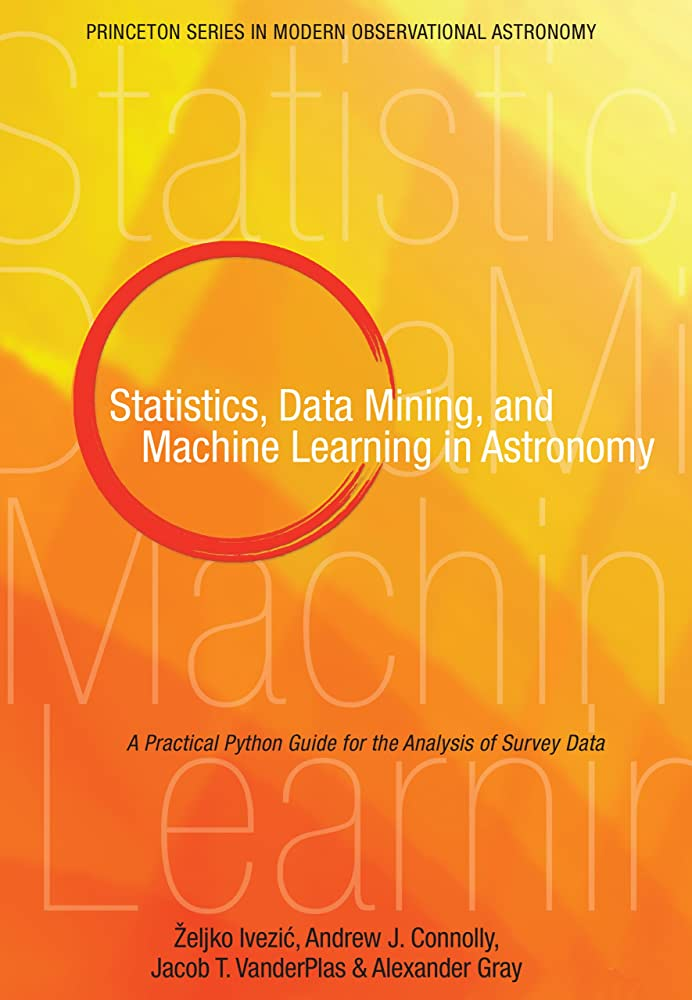
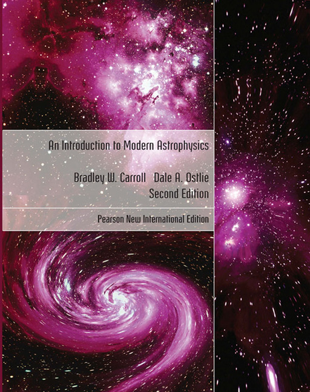
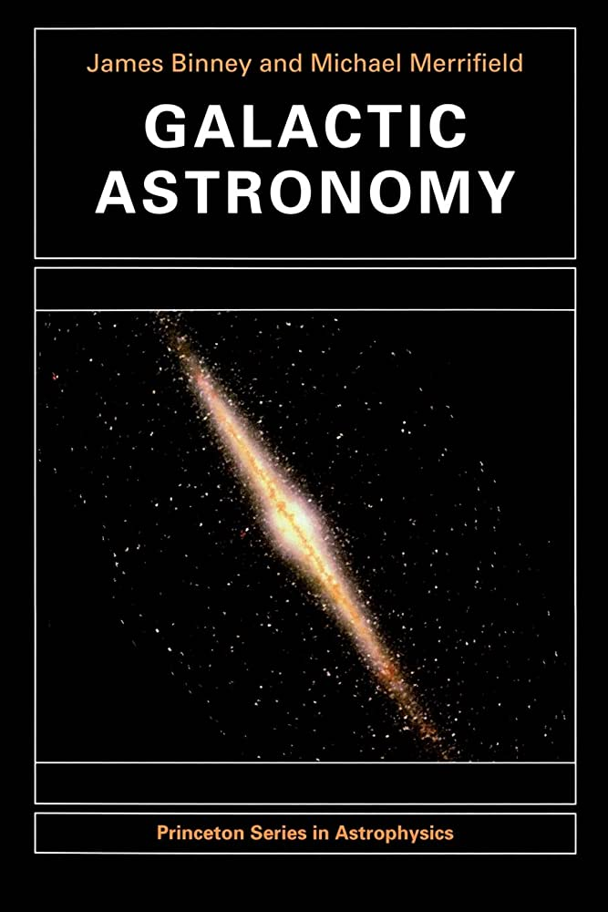
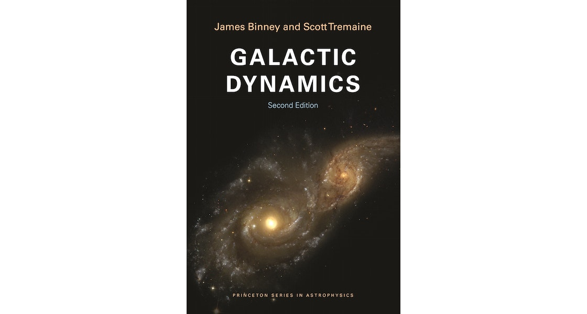

Some ot the text books i prefer: 1. Galactic Astronomy and Dynamic (Binney and Merrifield) 2. Stellar Evolution and Structure 3. Statistics Data
Mining And Machine Learning (Ivezic) 4. Pattern Recognition (Bishop) etc and many more.

This book is about the ML in astronomy. The author describes the theory and pyhton code very detailly.
This book is mostly used for Computer vision, image processing and image classification.

This book is one of the important book for astronomers. It describes the theory and equations from scratch to advance.
I enjoyed learning this book a lot. From galaxy to stellar, it almost cover each and every topic of Astronomy and Astrophysics.

This book is one of the important book for galactic astronomers.
It describes the theory and equations from scratch to advance for the galaxy.
I enjoyed learning this book a lot.
It almost cover each and every topic of galactic astronomy

This book along with Galactic astronomy are about the complete concept of galaxy.
The author describes things that are happening in star in very datail.
The internal structure structure of the stars, their life cycle and many more. I found the concept is very clearn, but the author
skip significant steps in the derivationof the equation. Its part second about stellar atmosphere make it complete book.
Astroinformatics : This course offered by IANCU and taught by Professor Kinoshita Daisuke. This course is mainly for the one who want to improve their python and the way they want to make their code looks good. I really appreciate Professor's effort.
Stellar: Stellar structure and evolutionn, Stellar structure and atmosphere are the courses taught by Prof Chen-Wen Ping, and Prof Kinoshita Daisuke. These both courses are about the evolution and the structure of the stars. These courses help me understand a lot more about stars.
Astrophysics of Galaxy: Taught by Prof Yen-Chen Pan, one of the important course to understand about our galaxy. The way professor taught this subject is amazing.